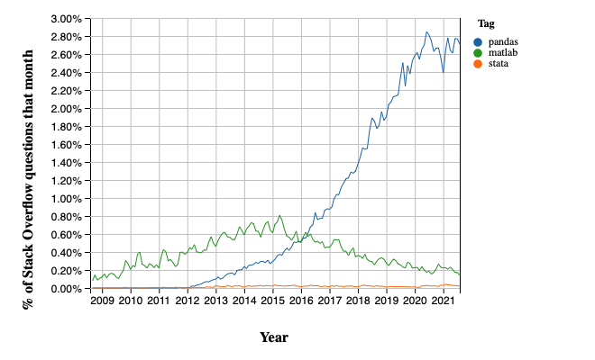
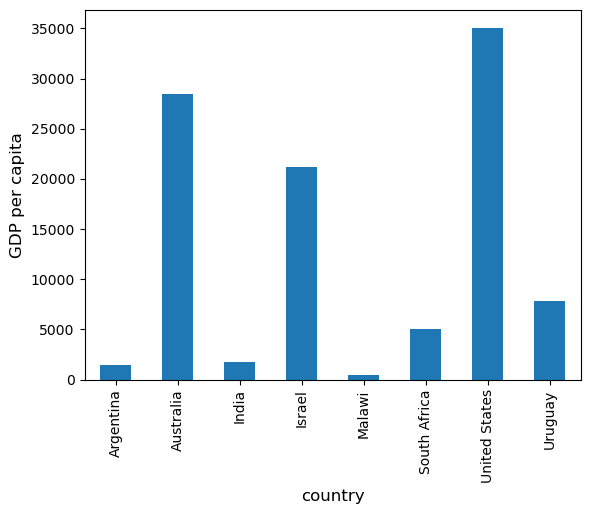
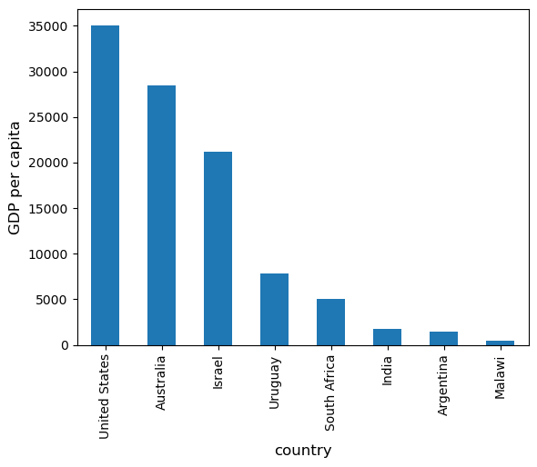
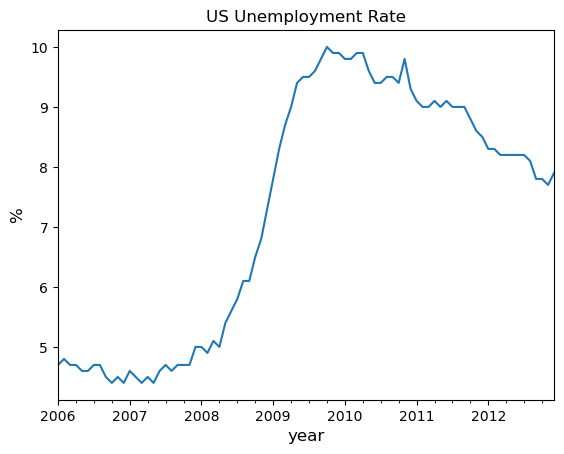
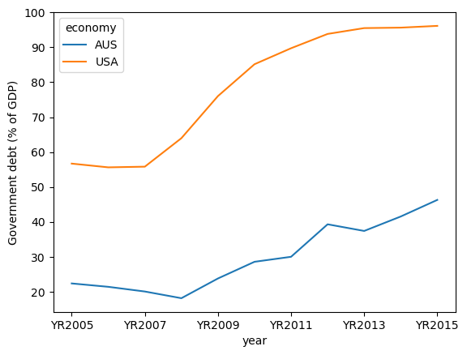
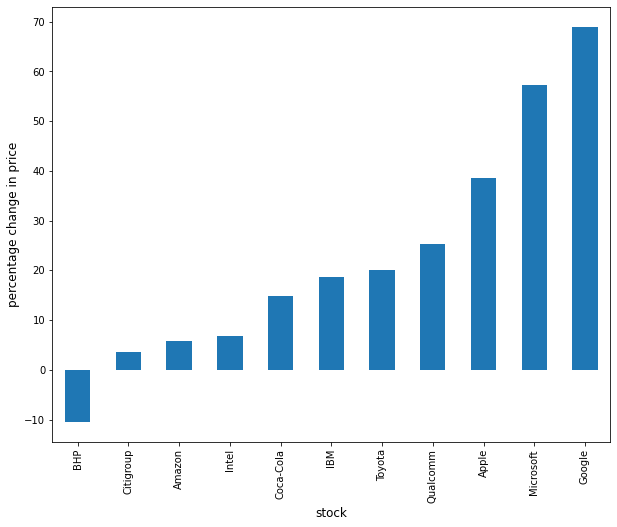
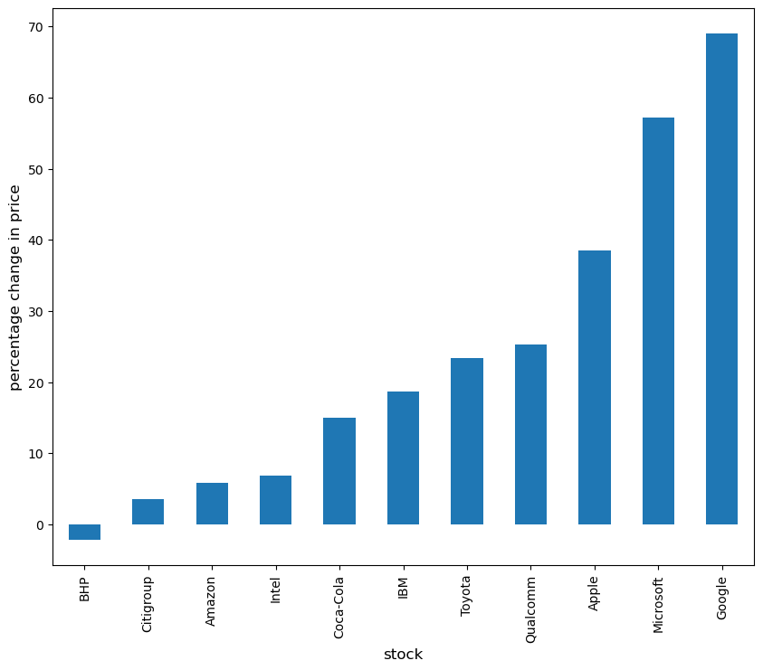
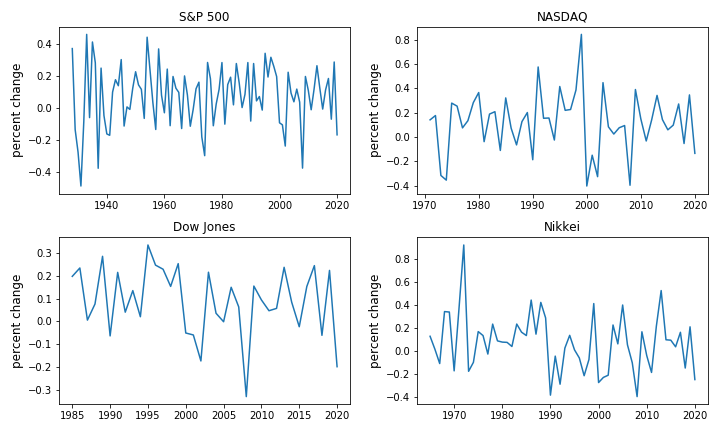
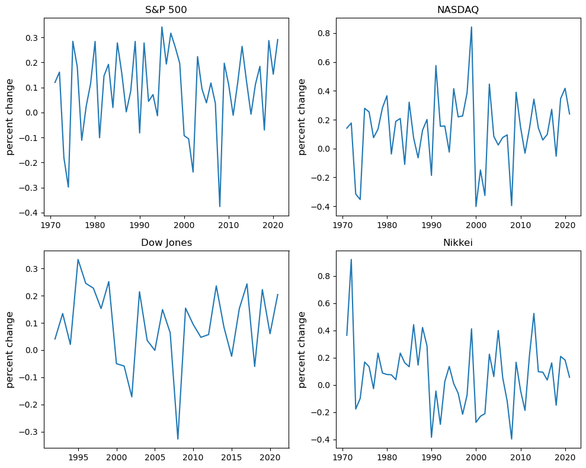

1. Pandas#
Anaconda-യിൽ ഉള്ളതിന് പുറമെ, ഈ lecture-ന് താഴെപ്പറയുന്ന libraries ആവശ്യമാണ്:
!pip install --upgrade wbgapi
!pip install --upgrade yfinance
1.1. Overview#
Pandas എന്നത് Python-നുള്ള വേഗതയേറിയതും കാര്യക്ഷമവുമായ data analysis tools-ന്റെ ഒരു package ആണ്.
data science, machine learning തുടങ്ങിയ മേഖലകളുടെ വളർച്ചയ്ക്കൊപ്പം ഇതിന്റെ popularity കഴിഞ്ഞ വർഷങ്ങളിൽ കുതിച്ചുയർന്നിട്ടുണ്ട്.
Stack Overflow Trends-ന്റെ സഹായത്തോടെ Matlab, STATA എന്നിവയുമായി താരതമ്യപ്പെടുത്തി കാലക്രമേണ ഉള്ള ഒരു popularity comparison ഇതാ
{kind=link}

NumPy അടിസ്ഥാന array data type-ഉം core array operations-ഉം നൽകുന്നത് പോലെ, pandas
data-യുമായി പ്രവർത്തിക്കാൻ ആവശ്യമായ fundamental structures define ചെയ്യുന്നു, ഒപ്പം
താഴെപ്പറയുന്നത് പോലുള്ള operations എളുപ്പമാക്കുന്ന methods അവയ്ക്ക് നൽകുന്നു
data reading ചെയ്യുക
indices adjust ചെയ്യുക
dates, time series എന്നിവയുമായി പ്രവർത്തിക്കുക
sorting, grouping, re-ordering, general data munging [1]
missing values കൈകാര്യം ചെയ്യുക, തുടങ്ങിയവ
കൂടുതൽ sophisticated ആയ statistical functionality statsmodels, scikit-learn പോലുള്ള pandas-ന്റെ മുകളിൽ built ചെയ്ത മറ്റ് packages-നായി വിട്ടിരിക്കുന്നു.
ഈ lecture pandas-നെ കുറിച്ചുള്ള ഒരു basic introduction നൽകും.
ലക്ചർ മുഴുവൻ, താഴെപ്പറയുന്ന imports നടന്നിട്ടുണ്ട് എന്ന് നമ്മൾ assume ചെയ്യും
import pandas as pd
import numpy as np
import matplotlib.pyplot as plt
import requests
pandas define ചെയ്യുന്ന രണ്ട് പ്രധാന data types Series-ഉം DataFrame-ഉം ആണ്.
Series-നെ data-യുടെ ഒരു "column" ആയി ചിന്തിക്കാം, ഒരു single variable-ന്റെ observations-ന്റെ ഒരു collection പോലെ.
related columns of data സൂക്ഷിക്കാനുള്ള ഒരു two-dimensional object ആണ് DataFrame.
1.2. Series#
നമുക്ക് Series-ൽ നിന്ന് തുടങ്ങാം.
നാല് random observations-ന്റെ ഒരു series create ചെയ്തുകൊണ്ട് നമ്മൾ ആരംഭിക്കുന്നു
s = pd.Series(np.random.randn(4), name='daily returns')
s
0 -1.652421
1 0.014571
2 -0.721377
3 1.202616
Name: daily returns, dtype: float64
ഇവിടെ 0, 1, 2, 3 എന്ന indices നാല് listed companies-നെ index ചെയ്യുന്നതായും, values അവയുടെ shares-ന്റെ daily returns ആയും നിങ്ങൾക്ക് സങ്കൽപ്പിക്കാം.
Pandas Series NumPy arrays-ന്റെ മുകളിൽ built ചെയ്തതാണ്, അതിനാൽ സമാനമായ പല operations-ഉം support ചെയ്യുന്നു
s * 100
0 -165.242090
1 1.457078
2 -72.137689
3 120.261582
Name: daily returns, dtype: float64
np.abs(s)
0 1.652421
1 0.014571
2 0.721377
3 1.202616
Name: daily returns, dtype: float64
എന്നാൽ Series NumPy arrays-നേക്കാൾ കൂടുതൽ നൽകുന്നു.
അധിക (statistically oriented) methods ഉള്ളതിന് പുറമെ
s.describe()
count 4.000000
mean -0.289153
std 1.205949
min -1.652421
25% -0.954138
50% -0.353403
75% 0.311582
max 1.202616
Name: daily returns, dtype: float64
അവയുടെ indices കൂടുതൽ flexible ആണ്
s.index = ['AMZN', 'AAPL', 'MSFT', 'GOOG']
s
AMZN -1.652421
AAPL 0.014571
MSFT -0.721377
GOOG 1.202616
Name: daily returns, dtype: float64
ഈ രീതിയിൽ കാണുമ്പോൾ, Series വേഗതയേറിയതും കാര്യക്ഷമവുമായ Python dictionaries-നെ പോലെയാണ് (dictionary-യിലെ items എല്ലാം ഒരേ type-ന്റെ ആയിരിക്കണം എന്ന restriction ഉണ്ട്---ഈ case-ൽ, floats).
വാസ്തവത്തിൽ, Python dictionaries-ൽ ഉപയോഗിക്കുന്ന syntax തന്നെ നിങ്ങൾക്ക് ഉപയോഗിക്കാം
s['AMZN']
np.float64(-1.652420902398222)
s['AMZN'] = 0
s
AMZN 0.000000
AAPL 0.014571
MSFT -0.721377
GOOG 1.202616
Name: daily returns, dtype: float64
'AAPL' in s
True
1.3. DataFrames#
Series data-യുടെ ഒറ്റ column ആണെങ്കിൽ, DataFrame ഓരോ variable-നും ഒരു column വീതം ഉള്ള പല columns ആണ്.
അടിസ്ഥാനപരമായി, pandas-ലെ DataFrame ഒരു (highly optimized) Excel spreadsheet-ന് സമാനമാണ്.
അതിനാൽ, rows-ഉം columns-ഉം ആയി സ്വാഭാവികമായി organize ചെയ്യപ്പെട്ട data represent ചെയ്യാനും analyze ചെയ്യാനും ഉള്ള ശക്തമായ ഒരു tool ആണിത്, individual rows-നും individual columns-നും വേണ്ടി descriptive indexes ഉള്ളതോടെ.
Penn World Tables-ൽ നിന്ന് എടുത്ത pandas/data/test_pwt.csv എന്ന CSV file-ൽ നിന്ന് data read ചെയ്യുന്ന ഒരു example നോക്കാം.
Dataset-ൽ താഴെപ്പറയുന്ന indicators അടങ്ങിയിരിക്കുന്നു
Variable Name |
Description |
|---|---|
POP |
Population (in thousands) |
XRAT |
Exchange Rate to US Dollar |
tcgdp |
Total PPP Converted GDP (in million international dollar) |
cc |
Consumption Share of PPP Converted GDP Per Capita (%) |
cg |
Government Consumption Share of PPP Converted GDP Per Capita (%) |
pandas function ആയ read_csv ഉപയോഗിച്ച് നമ്മൾ ഇത് ഒരു URL-ൽ നിന്ന് read ചെയ്യും.
df = pd.read_csv('https://raw.githubusercontent.com/QuantEcon/lecture-python-programming/main/lectures/_static/lecture_specific/pandas/data/test_pwt.csv')
type(df)
pandas.DataFrame
test_pwt.csv-ന്റെ content ഇതാ
df
| country | country isocode | year | POP | XRAT | tcgdp | cc | cg | |
|---|---|---|---|---|---|---|---|---|
| 0 | Argentina | ARG | 2000 | 37335.653 | 0.999500 | 2.950722e+05 | 75.716805 | 5.578804 |
| 1 | Australia | AUS | 2000 | 19053.186 | 1.724830 | 5.418047e+05 | 67.759026 | 6.720098 |
| 2 | India | IND | 2000 | 1006300.297 | 44.941600 | 1.728144e+06 | 64.575551 | 14.072206 |
| 3 | Israel | ISR | 2000 | 6114.570 | 4.077330 | 1.292539e+05 | 64.436451 | 10.266688 |
| 4 | Malawi | MWI | 2000 | 11801.505 | 59.543808 | 5.026222e+03 | 74.707624 | 11.658954 |
| 5 | South Africa | ZAF | 2000 | 45064.098 | 6.939830 | 2.272424e+05 | 72.718710 | 5.726546 |
| 6 | United States | USA | 2000 | 282171.957 | 1.000000 | 9.898700e+06 | 72.347054 | 6.032454 |
| 7 | Uruguay | URY | 2000 | 3219.793 | 12.099592 | 2.525596e+04 | 78.978740 | 5.108068 |
1.3.1. Select Data by Position#
Practice-ൽ, നമ്മൾ എപ്പോഴും ചെയ്യുന്ന ഒരു കാര്യം നമ്മുടെ interest ഉള്ള data-യുടെ ഒരു subset find ചെയ്യുകയും select ചെയ്യുകയും അതുമായി പ്രവർത്തിക്കുകയും ചെയ്യുക എന്നതാണ്.
standard Python array slicing notation ഉപയോഗിച്ച് നമുക്ക് particular rows select ചെയ്യാം
df[2:5]
| country | country isocode | year | POP | XRAT | tcgdp | cc | cg | |
|---|---|---|---|---|---|---|---|---|
| 2 | India | IND | 2000 | 1006300.297 | 44.941600 | 1.728144e+06 | 64.575551 | 14.072206 |
| 3 | Israel | ISR | 2000 | 6114.570 | 4.077330 | 1.292539e+05 | 64.436451 | 10.266688 |
| 4 | Malawi | MWI | 2000 | 11801.505 | 59.543808 | 5.026222e+03 | 74.707624 | 11.658954 |
Columns select ചെയ്യാൻ, ആവശ്യമുള്ള columns-ന്റെ names strings ആയി represent ചെയ്യുന്ന ഒരു list നമുക്ക് pass ചെയ്യാം
df[['country', 'tcgdp']]
| country | tcgdp | |
|---|---|---|
| 0 | Argentina | 2.950722e+05 |
| 1 | Australia | 5.418047e+05 |
| 2 | India | 1.728144e+06 |
| 3 | Israel | 1.292539e+05 |
| 4 | Malawi | 5.026222e+03 |
| 5 | South Africa | 2.272424e+05 |
| 6 | United States | 9.898700e+06 |
| 7 | Uruguay | 2.525596e+04 |
integers ഉപയോഗിച്ച് rows-ഉം columns-ഉം select ചെയ്യാൻ, .iloc[rows, columns] എന്ന format-ൽ iloc attribute ഉപയോഗിക്കണം.
df.iloc[2:5, 0:4]
| country | country isocode | year | POP | |
|---|---|---|---|---|
| 2 | India | IND | 2000 | 1006300.297 |
| 3 | Israel | ISR | 2000 | 6114.570 |
| 4 | Malawi | MWI | 2000 | 11801.505 |
integers-ഉം labels-ഉം കൂടിക്കലർത്തി rows-ഉം columns-ഉം select ചെയ്യാൻ, loc attribute സമാനമായ രീതിയിൽ ഉപയോഗിക്കാം
df.loc[df.index[2:5], ['country', 'tcgdp']]
| country | tcgdp | |
|---|---|---|
| 2 | India | 1.728144e+06 |
| 3 | Israel | 1.292539e+05 |
| 4 | Malawi | 5.026222e+03 |
1.3.2. Select Data by Conditions#
integers-ഉം names-ഉം ഉപയോഗിച്ച് rows-ഉം columns-ഉം index ചെയ്യുന്നതിന് പകരം, ചില (potentially complicated) conditions satisfy ചെയ്യുന്ന നമ്മുടെ interest ഉള്ള ഒരു sub-dataframe-ഉം നമുക്ക് ലഭിക്കും.
ഇത് ചെയ്യാനുള്ള വിവിധ വഴികൾ ഈ section demonstrate ചെയ്യുന്നു.
ഏറ്റവും straightforward ആയ വഴി [] operator ഉപയോഗിച്ചാണ്.
df[df.POP >= 20000]
| country | country isocode | year | POP | XRAT | tcgdp | cc | cg | |
|---|---|---|---|---|---|---|---|---|
| 0 | Argentina | ARG | 2000 | 37335.653 | 0.99950 | 2.950722e+05 | 75.716805 | 5.578804 |
| 2 | India | IND | 2000 | 1006300.297 | 44.94160 | 1.728144e+06 | 64.575551 | 14.072206 |
| 5 | South Africa | ZAF | 2000 | 45064.098 | 6.93983 | 2.272424e+05 | 72.718710 | 5.726546 |
| 6 | United States | USA | 2000 | 282171.957 | 1.00000 | 9.898700e+06 | 72.347054 | 6.032454 |
ഇവിടെ എന്താണ് സംഭവിക്കുന്നത് എന്ന് മനസ്സിലാക്കാൻ, df.POP >= 20000 boolean values-ന്റെ ഒരു series return ചെയ്യുന്നു എന്ന് ശ്രദ്ധിക്കുക.
df.POP >= 20000
0 True
1 False
2 True
3 False
4 False
5 True
6 True
7 False
Name: POP, dtype: bool
ഈ case-ൽ, df[___] boolean values-ന്റെ ഒരു series എടുത്ത് True values ഉള്ള rows മാത്രം return ചെയ്യുന്നു.
ഒരു ഉദാഹരണം കൂടി എടുക്കാം,
df[(df.country.isin(['Argentina', 'India', 'South Africa'])) & (df.POP > 40000)]
| country | country isocode | year | POP | XRAT | tcgdp | cc | cg | |
|---|---|---|---|---|---|---|---|---|
| 2 | India | IND | 2000 | 1006300.297 | 44.94160 | 1.728144e+06 | 64.575551 | 14.072206 |
| 5 | South Africa | ZAF | 2000 | 45064.098 | 6.93983 | 2.272424e+05 | 72.718710 | 5.726546 |
എന്നിരുന്നാലും, ഇതേ കാര്യം ചെയ്യാൻ മറ്റൊരു വഴിയുണ്ട്, അത് വലിയ dataframes-ന് കുറച്ചുകൂടി വേഗതയേറിയതും, കൂടുതൽ natural ആയ syntax-ഉള്ളതും ആണ്.
# the above is equivalent to
df.query("POP >= 20000")
| country | country isocode | year | POP | XRAT | tcgdp | cc | cg | |
|---|---|---|---|---|---|---|---|---|
| 0 | Argentina | ARG | 2000 | 37335.653 | 0.99950 | 2.950722e+05 | 75.716805 | 5.578804 |
| 2 | India | IND | 2000 | 1006300.297 | 44.94160 | 1.728144e+06 | 64.575551 | 14.072206 |
| 5 | South Africa | ZAF | 2000 | 45064.098 | 6.93983 | 2.272424e+05 | 72.718710 | 5.726546 |
| 6 | United States | USA | 2000 | 282171.957 | 1.00000 | 9.898700e+06 | 72.347054 | 6.032454 |
df.query("country in ['Argentina', 'India', 'South Africa'] and POP > 40000")
| country | country isocode | year | POP | XRAT | tcgdp | cc | cg | |
|---|---|---|---|---|---|---|---|---|
| 2 | India | IND | 2000 | 1006300.297 | 44.94160 | 1.728144e+06 | 64.575551 | 14.072206 |
| 5 | South Africa | ZAF | 2000 | 45064.098 | 6.93983 | 2.272424e+05 | 72.718710 | 5.726546 |
വ്യത്യസ്ത columns-ന് ഇടയിൽ arithmetic operations-ഉം നമുക്ക് allow ചെയ്യാം.
df[(df.cc + df.cg >= 80) & (df.POP <= 20000)]
| country | country isocode | year | POP | XRAT | tcgdp | cc | cg | |
|---|---|---|---|---|---|---|---|---|
| 4 | Malawi | MWI | 2000 | 11801.505 | 59.543808 | 5026.221784 | 74.707624 | 11.658954 |
| 7 | Uruguay | URY | 2000 | 3219.793 | 12.099592 | 25255.961693 | 78.978740 | 5.108068 |
# the above is equivalent to
df.query("cc + cg >= 80 & POP <= 20000")
| country | country isocode | year | POP | XRAT | tcgdp | cc | cg | |
|---|---|---|---|---|---|---|---|---|
| 4 | Malawi | MWI | 2000 | 11801.505 | 59.543808 | 5026.221784 | 74.707624 | 11.658954 |
| 7 | Uruguay | URY | 2000 | 3219.793 | 12.099592 | 25255.961693 | 78.978740 | 5.108068 |
ഉദാഹരണത്തിന്, ഏറ്റവും വലിയ household consumption - gdp share cc ഉള്ള country select ചെയ്യാൻ conditioning ഉപയോഗിക്കാം.
df.loc[df.cc == max(df.cc)]
| country | country isocode | year | POP | XRAT | tcgdp | cc | cg | |
|---|---|---|---|---|---|---|---|---|
| 7 | Uruguay | URY | 2000 | 3219.793 | 12.099592 | 25255.961693 | 78.97874 | 5.108068 |
selected sub-dataframe-ന്റെ ചില columns മാത്രം നമുക്ക് നോക്കണമെങ്കിൽ, മുകളിലുള്ള conditions .loc[__ , __] command-ഉമായി ഉപയോഗിക്കാം.
ആദ്യത്തെ argument condition എടുക്കുന്നു, രണ്ടാമത്തെ argument നമുക്ക് return വേണ്ട columns-ന്റെ ഒരു list എടുക്കുന്നു.
df.loc[(df.cc + df.cg >= 80) & (df.POP <= 20000), ['country', 'year', 'POP']]
| country | year | POP | |
|---|---|---|---|
| 4 | Malawi | 2000 | 11801.505 |
| 7 | Uruguay | 2000 | 3219.793 |
Application: Subsetting Dataframe
Real-world datasets enormous ആയിരിക്കാം.
computational efficiency വർദ്ധിപ്പിക്കാനും redundancy കുറയ്ക്കാനും data-യുടെ ഒരു subset ഉപയോഗിച്ച് പ്രവർത്തിക്കുന്നത് ചിലപ്പോൾ desirable ആണ്.
Population (POP)-ഉം total GDP (tcgdp)-ഉം മാത്രമേ നമുക്ക് interest ഉള്ളൂ എന്ന് സങ്കൽപ്പിക്കാം.
df എന്ന data frame ഈ variables മാത്രം ആയി strip ചെയ്യാനുള്ള ഒരു വഴി, മുകളിൽ വിവരിച്ച selection method ഉപയോഗിച്ച് dataframe overwrite ചെയ്യുക എന്നതാണ്
df_subset = df[['country', 'POP', 'tcgdp']]
df_subset
| country | POP | tcgdp | |
|---|---|---|---|
| 0 | Argentina | 37335.653 | 2.950722e+05 |
| 1 | Australia | 19053.186 | 5.418047e+05 |
| 2 | India | 1006300.297 | 1.728144e+06 |
| 3 | Israel | 6114.570 | 1.292539e+05 |
| 4 | Malawi | 11801.505 | 5.026222e+03 |
| 5 | South Africa | 45064.098 | 2.272424e+05 |
| 6 | United States | 282171.957 | 9.898700e+06 |
| 7 | Uruguay | 3219.793 | 2.525596e+04 |
തുടർന്ന്, further analysis-ന് വേണ്ടി ഈ ചെറിയ dataset നമുക്ക് save ചെയ്യാം.
df_subset.to_csv('pwt_subset.csv', index=False)
1.3.3. Apply Method#
വ്യാപകമായി ഉപയോഗിക്കുന്ന മറ്റൊരു Pandas method ആണ് df.apply().
ഇത് ഓരോ row/column-നും ഒരു function apply ചെയ്യുകയും ഒരു series return ചെയ്യുകയും ചെയ്യുന്നു.
ഈ function max function പോലുള്ള ചില built-in functions, ഒരു lambda function, അല്ലെങ്കിൽ ഒരു user-defined function ആകാം.
max function ഉപയോഗിച്ചുള്ള ഒരു ഉദാഹരണം ഇതാ
df[['year', 'POP', 'XRAT', 'tcgdp', 'cc', 'cg']].apply(max)
year 2.000000e+03
POP 1.006300e+06
XRAT 5.954381e+01
tcgdp 9.898700e+06
cc 7.897874e+01
cg 1.407221e+01
dtype: float64
ഈ code-ന്റെ line എല്ലാ selected columns-ലും max function apply ചെയ്യുന്നു.
df.apply() method-ഉമായി lambda function പലപ്പോഴും ഉപയോഗിക്കാറുണ്ട്
dataframe-ലെ ഓരോ row-ക്കും തന്നെ return ചെയ്യുക എന്നത് ഒരു trivial ഉദാഹരണമാണ്
df.apply(lambda row: row, axis=1)
| country | country isocode | year | POP | XRAT | tcgdp | cc | cg | |
|---|---|---|---|---|---|---|---|---|
| 0 | Argentina | ARG | 2000 | 37335.653 | 0.999500 | 2.950722e+05 | 75.716805 | 5.578804 |
| 1 | Australia | AUS | 2000 | 19053.186 | 1.724830 | 5.418047e+05 | 67.759026 | 6.720098 |
| 2 | India | IND | 2000 | 1006300.297 | 44.941600 | 1.728144e+06 | 64.575551 | 14.072206 |
| 3 | Israel | ISR | 2000 | 6114.570 | 4.077330 | 1.292539e+05 | 64.436451 | 10.266688 |
| 4 | Malawi | MWI | 2000 | 11801.505 | 59.543808 | 5.026222e+03 | 74.707624 | 11.658954 |
| 5 | South Africa | ZAF | 2000 | 45064.098 | 6.939830 | 2.272424e+05 | 72.718710 | 5.726546 |
| 6 | United States | USA | 2000 | 282171.957 | 1.000000 | 9.898700e+06 | 72.347054 | 6.032454 |
| 7 | Uruguay | URY | 2000 | 3219.793 | 12.099592 | 2.525596e+04 | 78.978740 | 5.108068 |
Note
.apply() method-ന്
axis = 0 -- ഓരോ column-നും (variables) function apply ചെയ്യുന്നു
axis = 1 -- ഓരോ row-ക്കും (observations) function apply ചെയ്യുന്നു
axis = 0 ആണ് default parameter
കൂടുതൽ advanced ആയ selection ചെയ്യാൻ .loc[]-ഉമായി ചേർത്ത് നമുക്ക് ഇത് ഉപയോഗിക്കാം.
complexCondition = df.apply(
lambda row: row.POP > 40000 if row.country in ['Argentina', 'India', 'South Africa'] else row.POP < 20000,
axis=1), ['country', 'year', 'POP', 'XRAT', 'tcgdp']
if-else statement-ൽ specify ചെയ്ത condition satisfy ചെയ്യുന്ന rows-ന്റെ boolean values-ന്റെ ഒരു series ഇവിടെ df.apply() return ചെയ്യുന്നു.
കൂടാതെ, interest ഉള്ള variables-ന്റെ ഒരു subset-ഉം ഇത് define ചെയ്യുന്നു.
complexCondition
(0 False
1 True
2 True
3 True
4 True
5 True
6 False
7 True
dtype: bool,
['country', 'year', 'POP', 'XRAT', 'tcgdp'])
ഈ condition dataframe-ൽ apply ചെയ്യുമ്പോൾ, result ഇതായിരിക്കും
df.loc[complexCondition]
| country | year | POP | XRAT | tcgdp | |
|---|---|---|---|---|---|
| 1 | Australia | 2000 | 19053.186 | 1.724830 | 5.418047e+05 |
| 2 | India | 2000 | 1006300.297 | 44.941600 | 1.728144e+06 |
| 3 | Israel | 2000 | 6114.570 | 4.077330 | 1.292539e+05 |
| 4 | Malawi | 2000 | 11801.505 | 59.543808 | 5.026222e+03 |
| 5 | South Africa | 2000 | 45064.098 | 6.939830 | 2.272424e+05 |
| 7 | Uruguay | 2000 | 3219.793 | 12.099592 | 2.525596e+04 |
1.3.4. Make Changes in DataFrames#
future analysis-ന് വേണ്ടി ഒരു clean dataset generate ചെയ്യാൻ dataframes-ൽ changes ഉണ്ടാക്കാനുള്ള ability പ്രധാനമാണ്.
1. നമ്മൾ select ചെയ്ത rows "keep" ചെയ്യാനും ബാക്കിയുള്ള rows NaN ആയി replace ചെയ്യാനും df.where() സൗകര്യപ്രദമായി ഉപയോഗിക്കാം
df.where(df.POP >= 20000)
| country | country isocode | year | POP | XRAT | tcgdp | cc | cg | |
|---|---|---|---|---|---|---|---|---|
| 0 | Argentina | ARG | 2000.0 | 37335.653 | 0.99950 | 2.950722e+05 | 75.716805 | 5.578804 |
| 1 | NaN | NaN | NaN | NaN | NaN | NaN | NaN | NaN |
| 2 | India | IND | 2000.0 | 1006300.297 | 44.94160 | 1.728144e+06 | 64.575551 | 14.072206 |
| 3 | NaN | NaN | NaN | NaN | NaN | NaN | NaN | NaN |
| 4 | NaN | NaN | NaN | NaN | NaN | NaN | NaN | NaN |
| 5 | South Africa | ZAF | 2000.0 | 45064.098 | 6.93983 | 2.272424e+05 | 72.718710 | 5.726546 |
| 6 | United States | USA | 2000.0 | 282171.957 | 1.00000 | 9.898700e+06 | 72.347054 | 6.032454 |
| 7 | NaN | NaN | NaN | NaN | NaN | NaN | NaN | NaN |
2. modify ചെയ്യേണ്ട column specify ചെയ്യാൻ .loc[] ലളിതമായി ഉപയോഗിച്ച് values assign ചെയ്യാം
df.loc[df.cg == max(df.cg), 'cg'] = np.nan
df
| country | country isocode | year | POP | XRAT | tcgdp | cc | cg | |
|---|---|---|---|---|---|---|---|---|
| 0 | Argentina | ARG | 2000 | 37335.653 | 0.999500 | 2.950722e+05 | 75.716805 | 5.578804 |
| 1 | Australia | AUS | 2000 | 19053.186 | 1.724830 | 5.418047e+05 | 67.759026 | 6.720098 |
| 2 | India | IND | 2000 | 1006300.297 | 44.941600 | 1.728144e+06 | 64.575551 | NaN |
| 3 | Israel | ISR | 2000 | 6114.570 | 4.077330 | 1.292539e+05 | 64.436451 | 10.266688 |
| 4 | Malawi | MWI | 2000 | 11801.505 | 59.543808 | 5.026222e+03 | 74.707624 | 11.658954 |
| 5 | South Africa | ZAF | 2000 | 45064.098 | 6.939830 | 2.272424e+05 | 72.718710 | 5.726546 |
| 6 | United States | USA | 2000 | 282171.957 | 1.000000 | 9.898700e+06 | 72.347054 | 6.032454 |
| 7 | Uruguay | URY | 2000 | 3219.793 | 12.099592 | 2.525596e+04 | 78.978740 | 5.108068 |
3. rows/columns as a whole modify ചെയ്യാൻ .apply() method ഉപയോഗിക്കാം
def update_row(row):
# modify POP
row.POP = np.nan if row.POP<= 10000 else row.POP
# modify XRAT
row.XRAT = row.XRAT / 10
return row
df.apply(update_row, axis=1)
| country | country isocode | year | POP | XRAT | tcgdp | cc | cg | |
|---|---|---|---|---|---|---|---|---|
| 0 | Argentina | ARG | 2000 | 37335.653 | 0.099950 | 2.950722e+05 | 75.716805 | 5.578804 |
| 1 | Australia | AUS | 2000 | 19053.186 | 0.172483 | 5.418047e+05 | 67.759026 | 6.720098 |
| 2 | India | IND | 2000 | 1006300.297 | 4.494160 | 1.728144e+06 | 64.575551 | NaN |
| 3 | Israel | ISR | 2000 | NaN | 0.407733 | 1.292539e+05 | 64.436451 | 10.266688 |
| 4 | Malawi | MWI | 2000 | 11801.505 | 5.954381 | 5.026222e+03 | 74.707624 | 11.658954 |
| 5 | South Africa | ZAF | 2000 | 45064.098 | 0.693983 | 2.272424e+05 | 72.718710 | 5.726546 |
| 6 | United States | USA | 2000 | 282171.957 | 0.100000 | 9.898700e+06 | 72.347054 | 6.032454 |
| 7 | Uruguay | URY | 2000 | NaN | 1.209959 | 2.525596e+04 | 78.978740 | 5.108068 |
4. dataframe-ലെ എല്ലാ individual entries-ഉം ഒരുമിച്ച് modify ചെയ്യാൻ .map() method ഉപയോഗിക്കാം.
# Round all decimal numbers to 2 decimal places
df.map(lambda x : round(x,2) if type(x)!=str else x)
| country | country isocode | year | POP | XRAT | tcgdp | cc | cg | |
|---|---|---|---|---|---|---|---|---|
| 0 | Argentina | ARG | 2000 | 37335.65 | 1.00 | 295072.22 | 75.72 | 5.58 |
| 1 | Australia | AUS | 2000 | 19053.19 | 1.72 | 541804.65 | 67.76 | 6.72 |
| 2 | India | IND | 2000 | 1006300.30 | 44.94 | 1728144.37 | 64.58 | NaN |
| 3 | Israel | ISR | 2000 | 6114.57 | 4.08 | 129253.89 | 64.44 | 10.27 |
| 4 | Malawi | MWI | 2000 | 11801.50 | 59.54 | 5026.22 | 74.71 | 11.66 |
| 5 | South Africa | ZAF | 2000 | 45064.10 | 6.94 | 227242.37 | 72.72 | 5.73 |
| 6 | United States | USA | 2000 | 282171.96 | 1.00 | 9898700.00 | 72.35 | 6.03 |
| 7 | Uruguay | URY | 2000 | 3219.79 | 12.10 | 25255.96 | 78.98 | 5.11 |
Application: Missing Value Imputation
Missing values replace ചെയ്യുന്നത് data munging-ലെ ഒരു പ്രധാന step ആണ്.
നമുക്ക് randomly ചില NaN values insert ചെയ്യാം
for idx in list(zip([0, 3, 5, 6], [3, 4, 6, 2])):
df.iloc[idx] = np.nan
df
| country | country isocode | year | POP | XRAT | tcgdp | cc | cg | |
|---|---|---|---|---|---|---|---|---|
| 0 | Argentina | ARG | 2000.0 | NaN | 0.999500 | 2.950722e+05 | 75.716805 | 5.578804 |
| 1 | Australia | AUS | 2000.0 | 19053.186 | 1.724830 | 5.418047e+05 | 67.759026 | 6.720098 |
| 2 | India | IND | 2000.0 | 1006300.297 | 44.941600 | 1.728144e+06 | 64.575551 | NaN |
| 3 | Israel | ISR | 2000.0 | 6114.570 | NaN | 1.292539e+05 | 64.436451 | 10.266688 |
| 4 | Malawi | MWI | 2000.0 | 11801.505 | 59.543808 | 5.026222e+03 | 74.707624 | 11.658954 |
| 5 | South Africa | ZAF | 2000.0 | 45064.098 | 6.939830 | 2.272424e+05 | NaN | 5.726546 |
| 6 | United States | USA | NaN | 282171.957 | 1.000000 | 9.898700e+06 | 72.347054 | 6.032454 |
| 7 | Uruguay | URY | 2000.0 | 3219.793 | 12.099592 | 2.525596e+04 | 78.978740 | 5.108068 |
ഇവിടെ zip() function രണ്ട് lists-ൽ നിന്ന് values-ന്റെ pairs create ചെയ്യുന്നു (അതായത് [0,3], [3,4] ...)
എല്ലാ missing values-ഉം 0 ആയി replace ചെയ്യാൻ വീണ്ടും .map() method നമുക്ക് ഉപയോഗിക്കാം
# replace all NaN values by 0
def replace_nan(x):
if type(x)!=str:
return 0 if np.isnan(x) else x
else:
return x
df.map(replace_nan)
| country | country isocode | year | POP | XRAT | tcgdp | cc | cg | |
|---|---|---|---|---|---|---|---|---|
| 0 | Argentina | ARG | 2000.0 | 0.000 | 0.999500 | 2.950722e+05 | 75.716805 | 5.578804 |
| 1 | Australia | AUS | 2000.0 | 19053.186 | 1.724830 | 5.418047e+05 | 67.759026 | 6.720098 |
| 2 | India | IND | 2000.0 | 1006300.297 | 44.941600 | 1.728144e+06 | 64.575551 | 0.000000 |
| 3 | Israel | ISR | 2000.0 | 6114.570 | 0.000000 | 1.292539e+05 | 64.436451 | 10.266688 |
| 4 | Malawi | MWI | 2000.0 | 11801.505 | 59.543808 | 5.026222e+03 | 74.707624 | 11.658954 |
| 5 | South Africa | ZAF | 2000.0 | 45064.098 | 6.939830 | 2.272424e+05 | 0.000000 | 5.726546 |
| 6 | United States | USA | 0.0 | 282171.957 | 1.000000 | 9.898700e+06 | 72.347054 | 6.032454 |
| 7 | Uruguay | URY | 2000.0 | 3219.793 | 12.099592 | 2.525596e+04 | 78.978740 | 5.108068 |
Missing values replace ചെയ്യാൻ Pandas നമുക്ക് സൗകര്യപ്രദമായ methods-ഉം നൽകുന്നു.
ഉദാഹരണത്തിന്, variable means ഉപയോഗിച്ചുള്ള single imputation pandas-ൽ എളുപ്പത്തിൽ ചെയ്യാം
df = df.fillna(df.iloc[:,2:8].mean())
df
| country | country isocode | year | POP | XRAT | tcgdp | cc | cg | |
|---|---|---|---|---|---|---|---|---|
| 0 | Argentina | ARG | 2000.0 | 1.962465e+05 | 0.999500 | 2.950722e+05 | 75.716805 | 5.578804 |
| 1 | Australia | AUS | 2000.0 | 1.905319e+04 | 1.724830 | 5.418047e+05 | 67.759026 | 6.720098 |
| 2 | India | IND | 2000.0 | 1.006300e+06 | 44.941600 | 1.728144e+06 | 64.575551 | 7.298802 |
| 3 | Israel | ISR | 2000.0 | 6.114570e+03 | 18.178451 | 1.292539e+05 | 64.436451 | 10.266688 |
| 4 | Malawi | MWI | 2000.0 | 1.180150e+04 | 59.543808 | 5.026222e+03 | 74.707624 | 11.658954 |
| 5 | South Africa | ZAF | 2000.0 | 4.506410e+04 | 6.939830 | 2.272424e+05 | 71.217322 | 5.726546 |
| 6 | United States | USA | 2000.0 | 2.821720e+05 | 1.000000 | 9.898700e+06 | 72.347054 | 6.032454 |
| 7 | Uruguay | URY | 2000.0 | 3.219793e+03 | 12.099592 | 2.525596e+04 | 78.978740 | 5.108068 |
Missing value imputation എന്നത് വിവിധ machine learning techniques ഉൾപ്പെടുന്ന data science-ലെ ഒരു വലിയ area ആണ്.
missing values impute ചെയ്യാൻ python-ൽ കൂടുതൽ advanced tools-ഉം ഉണ്ട്.
1.3.5. Standardization and Visualization#
Population (POP)-ഉം total GDP (tcgdp)-ഉം മാത്രമേ നമുക്ക് interest ഉള്ളൂ എന്ന് സങ്കൽപ്പിക്കാം.
df എന്ന data frame ഈ variables മാത്രം ആയി strip ചെയ്യാനുള്ള ഒരു വഴി, മുകളിൽ വിവരിച്ച selection method ഉപയോഗിച്ച് dataframe overwrite ചെയ്യുക എന്നതാണ്
df = df[['country', 'POP', 'tcgdp']]
df
| country | POP | tcgdp | |
|---|---|---|---|
| 0 | Argentina | 1.962465e+05 | 2.950722e+05 |
| 1 | Australia | 1.905319e+04 | 5.418047e+05 |
| 2 | India | 1.006300e+06 | 1.728144e+06 |
| 3 | Israel | 6.114570e+03 | 1.292539e+05 |
| 4 | Malawi | 1.180150e+04 | 5.026222e+03 |
| 5 | South Africa | 4.506410e+04 | 2.272424e+05 |
| 6 | United States | 2.821720e+05 | 9.898700e+06 |
| 7 | Uruguay | 3.219793e+03 | 2.525596e+04 |
ഇവിടെ 0, 1,..., 7 എന്ന index redundant ആണ്, കാരണം country names-നെ ഒരു index ആയി നമുക്ക് ഉപയോഗിക്കാം.
ഇത് ചെയ്യാൻ, dataframe-ലെ country variable-നെ index ആയി നമ്മൾ set ചെയ്യുന്നു
df = df.set_index('country')
df
| POP | tcgdp | |
|---|---|---|
| country | ||
| Argentina | 1.962465e+05 | 2.950722e+05 |
| Australia | 1.905319e+04 | 5.418047e+05 |
| India | 1.006300e+06 | 1.728144e+06 |
| Israel | 6.114570e+03 | 1.292539e+05 |
| Malawi | 1.180150e+04 | 5.026222e+03 |
| South Africa | 4.506410e+04 | 2.272424e+05 |
| United States | 2.821720e+05 | 9.898700e+06 |
| Uruguay | 3.219793e+03 | 2.525596e+04 |
Columns-ന് അൽപ്പം മെച്ചപ്പെട്ട names നൽകാം
df.columns = 'population', 'total GDP'
df
| population | total GDP | |
|---|---|---|
| country | ||
| Argentina | 1.962465e+05 | 2.950722e+05 |
| Australia | 1.905319e+04 | 5.418047e+05 |
| India | 1.006300e+06 | 1.728144e+06 |
| Israel | 6.114570e+03 | 1.292539e+05 |
| Malawi | 1.180150e+04 | 5.026222e+03 |
| South Africa | 4.506410e+04 | 2.272424e+05 |
| United States | 2.821720e+05 | 9.898700e+06 |
| Uruguay | 3.219793e+03 | 2.525596e+04 |
population variable thousands-ൽ ആണ്, single units-ലേക്ക് നമുക്ക് മാറ്റാം
df['population'] = df['population'] * 1e3
df
| population | total GDP | |
|---|---|---|
| country | ||
| Argentina | 1.962465e+08 | 2.950722e+05 |
| Australia | 1.905319e+07 | 5.418047e+05 |
| India | 1.006300e+09 | 1.728144e+06 |
| Israel | 6.114570e+06 | 1.292539e+05 |
| Malawi | 1.180150e+07 | 5.026222e+03 |
| South Africa | 4.506410e+07 | 2.272424e+05 |
| United States | 2.821720e+08 | 9.898700e+06 |
| Uruguay | 3.219793e+06 | 2.525596e+04 |
അടുത്തതായി, real GDP per capita കാണിക്കുന്ന ഒരു column നമ്മൾ ചേർക്കാൻ പോകുന്നു, total GDP millions-ൽ ആയതിനാൽ 1,000,000 കൊണ്ട് multiply ചെയ്യുന്നു
df['GDP percap'] = df['total GDP'] * 1e6 / df['population']
df
| population | total GDP | GDP percap | |
|---|---|---|---|
| country | |||
| Argentina | 1.962465e+08 | 2.950722e+05 | 1503.579625 |
| Australia | 1.905319e+07 | 5.418047e+05 | 28436.433261 |
| India | 1.006300e+09 | 1.728144e+06 | 1717.324719 |
| Israel | 6.114570e+06 | 1.292539e+05 | 21138.672749 |
| Malawi | 1.180150e+07 | 5.026222e+03 | 425.896679 |
| South Africa | 4.506410e+07 | 2.272424e+05 | 5042.647686 |
| United States | 2.821720e+08 | 9.898700e+06 | 35080.381854 |
| Uruguay | 3.219793e+06 | 2.525596e+04 | 7843.970620 |
pandas DataFrame-ഉം Series objects-ഉം സംബന്ധിച്ച നല്ല ഒരു കാര്യം, Matplotlib വഴി പ്രവർത്തിക്കുന്ന plotting-നും visualization-നും വേണ്ടിയുള്ള methods അവയ്ക്ക് ഉണ്ട് എന്നതാണ്.
ഉദാഹരണത്തിന്, GDP per capita-യുടെ ഒരു bar plot നമുക്ക് എളുപ്പത്തിൽ generate ചെയ്യാം
ax = df['GDP percap'].plot(kind='bar')
ax.set_xlabel('country', fontsize=12)
ax.set_ylabel('GDP per capita', fontsize=12)
plt.show()

ഇപ്പോൾ data frame countries-ന്റെ alphabetical order-ൽ ആണ്---GDP per capita-ന്റെ order-ലേക്ക് നമുക്ക് അത് മാറ്റാം
df = df.sort_values(by='GDP percap', ascending=False)
df
| population | total GDP | GDP percap | |
|---|---|---|---|
| country | |||
| United States | 2.821720e+08 | 9.898700e+06 | 35080.381854 |
| Australia | 1.905319e+07 | 5.418047e+05 | 28436.433261 |
| Israel | 6.114570e+06 | 1.292539e+05 | 21138.672749 |
| Uruguay | 3.219793e+06 | 2.525596e+04 | 7843.970620 |
| South Africa | 4.506410e+07 | 2.272424e+05 | 5042.647686 |
| India | 1.006300e+09 | 1.728144e+06 | 1717.324719 |
| Argentina | 1.962465e+08 | 2.950722e+05 | 1503.579625 |
| Malawi | 1.180150e+07 | 5.026222e+03 | 425.896679 |
മുൻപത്തെപ്പോലെ plot ചെയ്യുമ്പോൾ ഇപ്പോൾ ഇത് ലഭിക്കുന്നു
ax = df['GDP percap'].plot(kind='bar')
ax.set_xlabel('country', fontsize=12)
ax.set_ylabel('GDP per capita', fontsize=12)
plt.show()

1.4. On-Line Data Sources#
online databases-നെ programmatically query ചെയ്യുന്നത് Python straightforward ആക്കുന്നു.
economists-ന് ഒരു പ്രധാന database ആണ് FRED --- St. Louis Fed maintain ചെയ്യുന്ന time series data-യുടെ ഒരു വലിയ collection.
ഉദാഹരണത്തിന്, unemployment rate-ൽ നമുക്ക് interest ഉണ്ട് എന്ന് കരുതുക.
(data csv ആയി download ചെയ്യാൻ, top right-ലെ Download click ചെയ്ത് CSV (data) option select ചെയ്യുക).
പകരമായി, ഒരു Python program-ൽ നിന്ന് നമുക്ക് CSV file access ചെയ്യാം.
ഇത് പല രീതികളിലും ചെയ്യാം.
താരതമ്യേന low-level ആയ ഒരു method-ൽ നമ്മൾ ആരംഭിച്ച് പിന്നീട് pandas-ലേക്ക് തിരിച്ചുവരും.
1.4.1. Accessing Data with requests#
Internet-ൽ നിന്ന് data request ചെയ്യാനുള്ള standard Python library ആയ requests ഉപയോഗിക്കുന്നതാണ് ഒരു option.
തുടങ്ങാൻ, നിങ്ങളുടെ computer-ൽ താഴെപ്പറയുന്ന code try ചെയ്യുക
r = requests.get('https://fred.stlouisfed.org/graph/fredgraph.csv?bgcolor=%23e1e9f0&chart_type=line&drp=0&fo=open%20sans&graph_bgcolor=%23ffffff&height=450&mode=fred&recession_bars=on&txtcolor=%23444444&ts=12&tts=12&width=1318&nt=0&thu=0&trc=0&show_legend=yes&show_axis_titles=yes&show_tooltip=yes&id=UNRATE&scale=left&cosd=1948-01-01&coed=2024-06-01&line_color=%234572a7&link_values=false&line_style=solid&mark_type=none&mw=3&lw=2&ost=-99999&oet=99999&mma=0&fml=a&fq=Monthly&fam=avg&fgst=lin&fgsnd=2020-02-01&line_index=1&transformation=lin&vintage_date=2024-07-29&revision_date=2024-07-29&nd=1948-01-01')
Error message ഒന്നും ഇല്ലെങ്കിൽ, call succeed ആയി എന്നാണ് അർത്ഥം.
Error ലഭിച്ചാൽ, സാധ്യതയുള്ള രണ്ട് കാരണങ്ങൾ ഉണ്ട്
നിങ്ങൾ Internet-ലേക്ക് connect ആയിട്ടില്ല --- ഇത് സംഭവിക്കില്ല എന്ന് പ്രതീക്ഷിക്കുന്നു.
നിങ്ങളുടെ machine ഒരു proxy server വഴിയാണ് Internet access ചെയ്യുന്നത്, Python-ന് ഇത് അറിയില്ല.
രണ്ടാമത്തെ case-ൽ, നിങ്ങൾക്ക് ഒന്നുകിൽ
മറ്റൊരു machine-ലേക്ക് switch ചെയ്യാം
the documentation വായിച്ച് നിങ്ങളുടെ proxy problem പരിഹരിക്കാം
എല്ലാം work ചെയ്യുന്നു എന്ന് assume ചെയ്താൽ, requests.get('https://research.stlouisfed.org/fred2/series/UNRATE/downloaddata/UNRATE.csv') എന്ന call return ചെയ്ത source object നിങ്ങൾക്ക് ഇപ്പോൾ ഉപയോഗിക്കാം
url = 'https://fred.stlouisfed.org/graph/fredgraph.csv?bgcolor=%23e1e9f0&chart_type=line&drp=0&fo=open%20sans&graph_bgcolor=%23ffffff&height=450&mode=fred&recession_bars=on&txtcolor=%23444444&ts=12&tts=12&width=1318&nt=0&thu=0&trc=0&show_legend=yes&show_axis_titles=yes&show_tooltip=yes&id=UNRATE&scale=left&cosd=1948-01-01&coed=2024-06-01&line_color=%234572a7&link_values=false&line_style=solid&mark_type=none&mw=3&lw=2&ost=-99999&oet=99999&mma=0&fml=a&fq=Monthly&fam=avg&fgst=lin&fgsnd=2020-02-01&line_index=1&transformation=lin&vintage_date=2024-07-29&revision_date=2024-07-29&nd=1948-01-01'
source = requests.get(url).content.decode().split("\n")
source[0]
'observation_date,UNRATE'
source[1]
'1948-01-01,3.4'
source[2]
'1948-02-01,3.8'
ഈ text parse ചെയ്ത് ഒരു array ആയി store ചെയ്യാൻ നമുക്ക് ഇപ്പോൾ കുറച്ച് additional code എഴുതാം.
എന്നാൽ ഇത് unnecessary ആണ് --- pandas-ന്റെ read_csv function ഈ task നമുക്കായി handle ചെയ്യും.
pandas നമ്മുടെ dates column recognize ചെയ്യാൻ parse_dates=True നമ്മൾ ഉപയോഗിക്കുന്നു, ഇത് simple date filtering-ന് അനുവദിക്കുന്നു
data = pd.read_csv(url, index_col=0, parse_dates=True)
data എന്ന ഒരു pandas DataFrame-ലേക്ക് data read ചെയ്തിരിക്കുന്നു, ഇത് ഇപ്പോൾ പതിവ് രീതിയിൽ നമുക്ക് manipulate ചെയ്യാം
type(data)
pandas.DataFrame
data.head() # A useful method to get a quick look at a data frame
| UNRATE | |
|---|---|
| observation_date | |
| 1948-01-01 | 3.4 |
| 1948-02-01 | 3.8 |
| 1948-03-01 | 4.0 |
| 1948-04-01 | 3.9 |
| 1948-05-01 | 3.5 |
pd.set_option('display.precision', 1)
data.describe() # Your output might differ slightly
| UNRATE | |
|---|---|
| count | 918.0 |
| mean | 5.7 |
| std | 1.7 |
| min | 2.5 |
| 25% | 4.4 |
| 50% | 5.5 |
| 75% | 6.7 |
| max | 14.8 |
2006 മുതൽ 2012 വരെയുള്ള unemployment rate ഇങ്ങനെയും നമുക്ക് plot ചെയ്യാം
ax = data['2006':'2012'].plot(title='US Unemployment Rate', legend=False)
ax.set_xlabel('year', fontsize=12)
ax.set_ylabel('%', fontsize=12)
plt.show()

pandas മറ്റ് പല file type alternatives-ഉം offer ചെയ്യുന്നു എന്നത് ശ്രദ്ധിക്കുക.
Read, excel, json, parquet ചെയ്യാനോ ഒരു database server-ലേക്ക് നേരിട്ട് plug ചെയ്യാനോ നമുക്ക് ഉപയോഗിക്കാവുന്ന a wide variety top-level methods Pandas-ന് ഉണ്ട്.
1.4.2. Using wbgapi and yfinance to Access Data#
World Bank publish ചെയ്യുന്ന പല databases-ൽ നിന്നും data fetch ചെയ്യാൻ wbgapi python library ഉപയോഗിക്കാം.
Note
wbgapi package-നെ കുറിച്ചുള്ള useful ആയ ചില information ഈ world bank blog post-ൽ, കൂടാതെ ഈ tutorial-ലും നിങ്ങൾക്ക് കണ്ടെത്താം
Exercises-ൽ Yahoo finance-ൽ നിന്ന് data fetch ചെയ്യാൻ yfinance-ഉം നമ്മൾ ഉപയോഗിക്കും.
ഇപ്പോൾ data download ചെയ്ത് plot ചെയ്യുന്നതിന്റെ ഒരു example നമുക്ക് നോക്കാം --- ഇത്തവണ World Bank-ൽ നിന്ന്.
World Bank ഒരു വലിയ range indicators-ൽ data collect ചെയ്ത് organize ചെയ്യുന്നു.
ഉദാഹരണത്തിന്, GDP-യുടെ ratio ആയി government debt-നെക്കുറിച്ചുള്ള ചില data ഇതാ.
അടുത്ത code example നിങ്ങൾക്ക് വേണ്ടി data fetch ചെയ്ത് US-നും Australia-നും വേണ്ടിയുള്ള time series plot ചെയ്യുന്നു
import wbgapi as wb
wb.series.info('GC.DOD.TOTL.GD.ZS')
| id | value |
|---|---|
| GC.DOD.TOTL.GD.ZS | Central government debt, total (% of GDP) |
| 1 elements |
govt_debt = wb.data.DataFrame('GC.DOD.TOTL.GD.ZS', economy=['USA','AUS'], time=range(2005,2016))
govt_debt = govt_debt.T # move years from columns to rows for plotting
govt_debt.plot(xlabel='year', ylabel='Government debt (% of GDP)');

1.5. Exercises#
Exercise 1.1
ഈ imports ഉപയോഗിച്ച്:
import datetime as dt
import yfinance as yf
താഴെപ്പറയുന്ന shares-ന്റെ 2021-ലെ percentage price change calculate ചെയ്യാൻ ഒരു program എഴുതുക:
ticker_list = {'INTC': 'Intel',
'MSFT': 'Microsoft',
'IBM': 'IBM',
'BHP': 'BHP',
'TM': 'Toyota',
'AAPL': 'Apple',
'AMZN': 'Amazon',
'C': 'Citigroup',
'QCOM': 'Qualcomm',
'KO': 'Coca-Cola',
'GOOG': 'Google'}
program-ന്റെ ആദ്യ ഭാഗം ഇതാ
def read_data(ticker_list,
start=dt.datetime(2021, 1, 1),
end=dt.datetime(2021, 12, 31)):
"""
This function reads in closing price data from Yahoo
for each tick in the ticker_list.
"""
ticker = pd.DataFrame()
for tick in ticker_list:
stock = yf.Ticker(tick)
prices = stock.history(start=start, end=end)
# Change the index to date-only
prices.index = pd.to_datetime(prices.index.date)
closing_prices = prices['Close']
ticker[tick] = closing_prices
return ticker
ticker = read_data(ticker_list)
Result-നെ ഇതുപോലുള്ള ഒരു bar graph ആയി plot ചെയ്യാൻ program complete ചെയ്യുക:
{kind=link}

Solution
percentage change calculate ചെയ്യാൻ Pandas ഉപയോഗിച്ച് ഈ problem approach ചെയ്യാൻ കുറച്ച് വഴികളുണ്ട്.
ആദ്യമായി, നിങ്ങൾക്ക് data extract ചെയ്ത് ഇതുപോലെ calculation perform ചെയ്യാം:
p1 = ticker.iloc[0] #Get the first set of prices as a Series
p2 = ticker.iloc[-1] #Get the last set of prices as a Series
price_change = (p2 - p1) / p1 * 100
price_change
INTC 6.9
MSFT 57.2
IBM 18.7
BHP -2.2
TM 23.4
AAPL 38.6
AMZN 5.8
C 3.6
QCOM 25.3
KO 14.9
GOOG 69.0
dtype: float64
പകരമായി periods argument ഉപയോഗിച്ച് ശരിയായ calculation perform ചെയ്യാൻ configure ചെയ്ത ഒരു inbuilt method pct_change നിങ്ങൾക്ക് ഉപയോഗിക്കാം.
change = ticker.pct_change(periods=len(ticker)-1, axis='rows')*100
price_change = change.iloc[-1]
price_change
INTC 6.9
MSFT 57.2
IBM 18.7
BHP -2.2
TM 23.4
AAPL 38.6
AMZN 5.8
C 3.6
QCOM 25.3
KO 14.9
GOOG 69.0
Name: 2021-12-30 00:00:00, dtype: float64
തുടർന്ന് chart plot ചെയ്യാൻ
price_change.sort_values(inplace=True)
price_change.rename(index=ticker_list, inplace=True)
fig, ax = plt.subplots(figsize=(10,8))
ax.set_xlabel('stock', fontsize=12)
ax.set_ylabel('percentage change in price', fontsize=12)
price_change.plot(kind='bar', ax=ax)
plt.show()

Exercise 1.2
Exercise 1.1-ൽ introduce ചെയ്ത read_data method ഉപയോഗിച്ച്, താഴെപ്പറയുന്ന indices-ന്റെ year-on-year percentage change obtain ചെയ്യാൻ ഒരു program എഴുതുക:
indices_list = {'^GSPC': 'S&P 500',
'^IXIC': 'NASDAQ',
'^DJI': 'Dow Jones',
'^N225': 'Nikkei'}
summary statistics കാണിക്കാനും result-നെ ഇതുപോലുള്ള ഒരു time series graph ആയി plot ചെയ്യാനും program complete ചെയ്യുക:
{kind=link}

Solution
Exercise 1.1-ൽ നിങ്ങൾ ചെയ്ത work പിന്തുടർന്ന്, start, end dates അതനുസരിച്ച് update ചെയ്ത് read_data ഉപയോഗിച്ച് data നിങ്ങൾക്ക് query ചെയ്യാം.
indices_data = read_data(
indices_list,
start=dt.datetime(1971, 1, 1), #Common Start Date
end=dt.datetime(2021, 12, 31)
)
തുടർന്ന്, ഓരോ വർഷത്തിലെയും prices-ന്റെ ആദ്യത്തെയും അവസാനത്തെയും set DataFrames ആയി extract ചെയ്ത്, ഇതുപോലെ yearly returns calculate ചെയ്യുക:
yearly_returns = pd.DataFrame()
for index, name in indices_list.items():
p1 = indices_data.groupby(indices_data.index.year)[index].first() # Get the first set of returns as a DataFrame
p2 = indices_data.groupby(indices_data.index.year)[index].last() # Get the last set of returns as a DataFrame
returns = (p2 - p1) / p1
yearly_returns[name] = returns
yearly_returns
| S&P 500 | NASDAQ | Dow Jones | Nikkei | |
|---|---|---|---|---|
| 1971 | 1.2e-01 | 1.4e-01 | NaN | 3.6e-01 |
| 1972 | 1.6e-01 | 1.8e-01 | NaN | 9.2e-01 |
| 1973 | -1.8e-01 | -3.2e-01 | NaN | -1.8e-01 |
| 1974 | -3.0e-01 | -3.5e-01 | NaN | -9.9e-02 |
| 1975 | 2.8e-01 | 2.8e-01 | NaN | 1.7e-01 |
| 1976 | 1.8e-01 | 2.5e-01 | NaN | 1.3e-01 |
| 1977 | -1.1e-01 | 7.5e-02 | NaN | -2.7e-02 |
| 1978 | 2.4e-02 | 1.3e-01 | NaN | 2.3e-01 |
| 1979 | 1.2e-01 | 2.8e-01 | NaN | 8.7e-02 |
| 1980 | 2.8e-01 | 3.7e-01 | NaN | 7.7e-02 |
| 1981 | -1.0e-01 | -3.8e-02 | NaN | 7.4e-02 |
| 1982 | 1.5e-01 | 1.9e-01 | NaN | 3.9e-02 |
| 1983 | 1.9e-01 | 2.1e-01 | NaN | 2.3e-01 |
| 1984 | 2.0e-02 | -1.1e-01 | NaN | 1.6e-01 |
| 1985 | 2.8e-01 | 3.2e-01 | NaN | 1.3e-01 |
| 1986 | 1.6e-01 | 7.3e-02 | NaN | 4.4e-01 |
| 1987 | 2.6e-03 | -6.4e-02 | NaN | 1.5e-01 |
| 1988 | 8.5e-02 | 1.3e-01 | NaN | 4.2e-01 |
| 1989 | 2.8e-01 | 2.0e-01 | NaN | 2.9e-01 |
| 1990 | -8.2e-02 | -1.9e-01 | NaN | -3.8e-01 |
| 1991 | 2.8e-01 | 5.8e-01 | NaN | -4.5e-02 |
| 1992 | 4.4e-02 | 1.5e-01 | 4.1e-02 | -2.9e-01 |
| 1993 | 7.1e-02 | 1.6e-01 | 1.3e-01 | 2.5e-02 |
| 1994 | -1.3e-02 | -2.4e-02 | 2.1e-02 | 1.4e-01 |
| 1995 | 3.4e-01 | 4.1e-01 | 3.3e-01 | 9.4e-03 |
| 1996 | 1.9e-01 | 2.2e-01 | 2.5e-01 | -6.1e-02 |
| 1997 | 3.2e-01 | 2.3e-01 | 2.3e-01 | -2.2e-01 |
| 1998 | 2.6e-01 | 3.9e-01 | 1.5e-01 | -7.5e-02 |
| 1999 | 2.0e-01 | 8.4e-01 | 2.5e-01 | 4.1e-01 |
| 2000 | -9.3e-02 | -4.0e-01 | -5.0e-02 | -2.7e-01 |
| 2001 | -1.1e-01 | -1.5e-01 | -5.9e-02 | -2.3e-01 |
| 2002 | -2.4e-01 | -3.3e-01 | -1.7e-01 | -2.1e-01 |
| 2003 | 2.2e-01 | 4.5e-01 | 2.1e-01 | 2.3e-01 |
| 2004 | 9.3e-02 | 8.4e-02 | 3.6e-02 | 6.1e-02 |
| 2005 | 3.8e-02 | 2.5e-02 | -1.1e-03 | 4.0e-01 |
| 2006 | 1.2e-01 | 7.6e-02 | 1.5e-01 | 5.3e-02 |
| 2007 | 3.7e-02 | 9.5e-02 | 6.3e-02 | -1.2e-01 |
| 2008 | -3.8e-01 | -4.0e-01 | -3.3e-01 | -4.0e-01 |
| 2009 | 2.0e-01 | 3.9e-01 | 1.5e-01 | 1.7e-01 |
| 2010 | 1.1e-01 | 1.5e-01 | 9.4e-02 | -4.0e-02 |
| 2011 | -1.1e-02 | -3.2e-02 | 4.7e-02 | -1.9e-01 |
| 2012 | 1.2e-01 | 1.4e-01 | 5.7e-02 | 2.1e-01 |
| 2013 | 2.6e-01 | 3.4e-01 | 2.4e-01 | 5.2e-01 |
| 2014 | 1.2e-01 | 1.4e-01 | 8.4e-02 | 9.7e-02 |
| 2015 | -6.9e-03 | 5.9e-02 | -2.3e-02 | 9.3e-02 |
| 2016 | 1.1e-01 | 9.8e-02 | 1.5e-01 | 3.6e-02 |
| 2017 | 1.8e-01 | 2.7e-01 | 2.4e-01 | 1.6e-01 |
| 2018 | -7.0e-02 | -5.3e-02 | -6.0e-02 | -1.5e-01 |
| 2019 | 2.9e-01 | 3.5e-01 | 2.2e-01 | 2.1e-01 |
| 2020 | 1.5e-01 | 4.2e-01 | 6.0e-02 | 1.8e-01 |
| 2021 | 2.9e-01 | 2.4e-01 | 2.0e-01 | 5.6e-02 |
അടുത്തതായി, describe method ഉപയോഗിച്ച് summary statistics നിങ്ങൾക്ക് obtain ചെയ്യാം.
yearly_returns.describe()
| S&P 500 | NASDAQ | Dow Jones | Nikkei | |
|---|---|---|---|---|
| count | 5.1e+01 | 5.1e+01 | 3.0e+01 | 5.1e+01 |
| mean | 9.2e-02 | 1.3e-01 | 9.1e-02 | 7.9e-02 |
| std | 1.6e-01 | 2.5e-01 | 1.4e-01 | 2.4e-01 |
| min | -3.8e-01 | -4.0e-01 | -3.3e-01 | -4.0e-01 |
| 25% | -2.2e-03 | 1.6e-04 | 2.5e-02 | -6.8e-02 |
| 50% | 1.2e-01 | 1.4e-01 | 8.9e-02 | 7.7e-02 |
| 75% | 2.0e-01 | 2.8e-01 | 2.1e-01 | 2.0e-01 |
| max | 3.4e-01 | 8.4e-01 | 3.3e-01 | 9.2e-01 |
തുടർന്ന്, chart plot ചെയ്യാൻ
fig, axes = plt.subplots(2, 2, figsize=(10, 8))
for iter_, ax in enumerate(axes.flatten()): # Flatten 2-D array to 1-D array
index_name = yearly_returns.columns[iter_] # Get index name per iteration
ax.plot(yearly_returns[index_name]) # Plot pct change of yearly returns per index
ax.set_ylabel("percent change", fontsize = 12)
ax.set_title(index_name)
plt.tight_layout()
